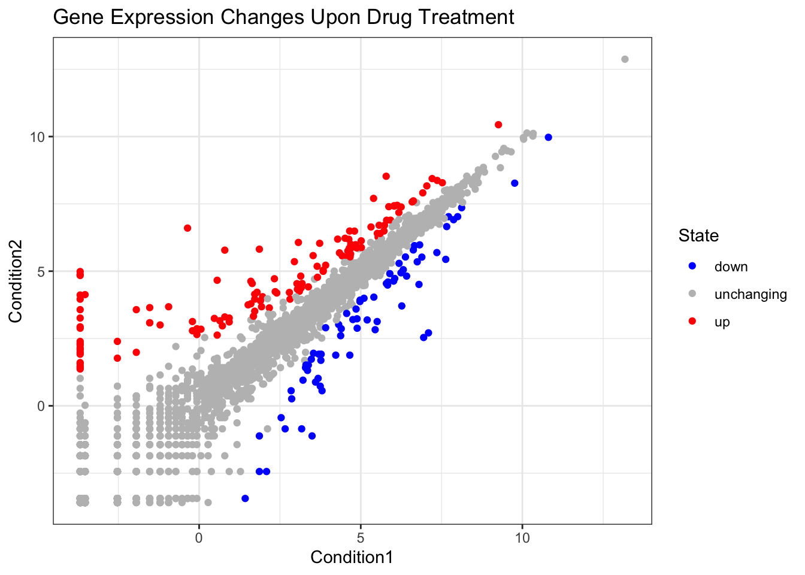
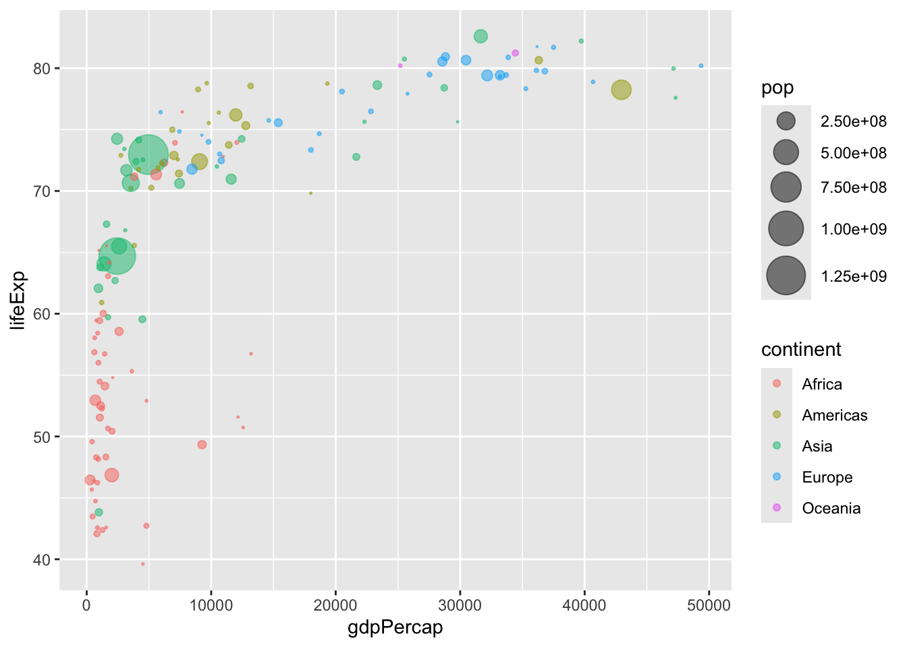
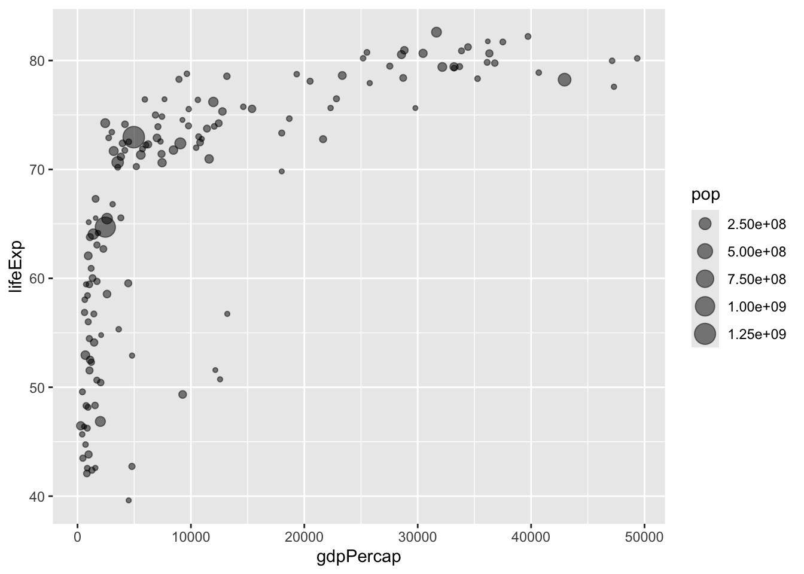
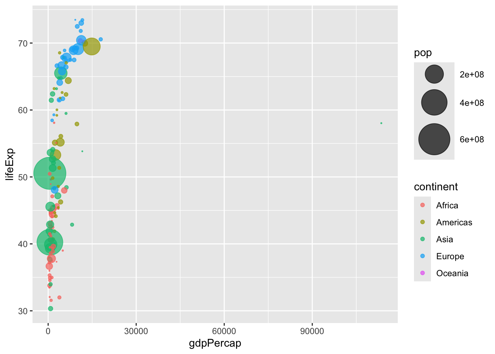
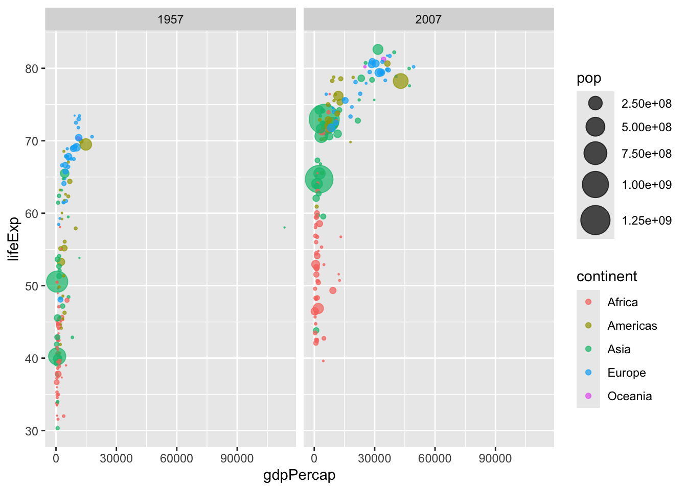

plot(cars)
R has lots of ways to make plots and figures. This includes so-called base graphics and packages like ggplot2
plot(cars)
This is a base R plot of the in-build cars dataset that has only two columns:
head(cars) speed dist
1 4 2
2 4 10
3 7 4
4 7 22
5 8 16
6 9 10Q. How would we plot this dataset with ggplot2
All ggplotfigures have at least three layers:
-data -aes (how the data map to the plot) -geoms (how we draw the data, lines, points, etc.)
Before I use any new package I need to download and install it with the install.packages() command.
I never use inatall.packages() within my quarto document otherwise I will install the package over and over and over again - which is silly!
Once a package is installed I can load it up with the library() function.
# install.packages("ggplot2")
library(ggplot2)
ggplot(cars) +
aes(x=speed, y=dist) +
geom_point()
Key-point: For simple plots (like the one above) ggplot is more verbose (we need to do more typing) but as plots get more complicated ggplot starts to be more clear and simple than base R plot()
p<- ggplot(cars) +
aes(speed, dist) +
geom_point() +
geom_smooth(method = "lm", se=FALSE) +
labs(title="Stopping Distance of Old Cars" , subtitle= "From the In-built Cars Dataset") +
theme_bw()url <- "https://bioboot.github.io/bimm143_S20/class-material/up_down_expression.txt"
genes <- read.delim(url)
head(genes) Gene Condition1 Condition2 State
1 A4GNT -3.6808610 -3.4401355 unchanging
2 AAAS 4.5479580 4.3864126 unchanging
3 AASDH 3.7190695 3.4787276 unchanging
4 AATF 5.0784720 5.0151916 unchanging
5 AATK 0.4711421 0.5598642 unchanging
6 AB015752.4 -3.6808610 -3.5921390 unchangingQ: How many genes are in this dataset?
nrow(genes)[1] 5196Q: How many columns are there and what are their names?
ncol(genes)[1] 4colnames(genes)[1] "Gene" "Condition1" "Condition2" "State" Q: How many upregulated genes are there?
table(genes$State)
down unchanging up
72 4997 127 Q: What fraction of total genes is upregulated?
round( table(genes$State)/nrow(genes), 2)
down unchanging up
0.01 0.96 0.02 A first plot:
p <- ggplot(genes) +
aes(Condition1, Condition2, col=State) +
geom_point() +
theme_bw() +
scale_color_manual( values=c("blue", "grey", "red"))p + theme_bw() +
labs(title= "Gene Expression Changes Upon Drug Treatment")
Playing with aesthetics (from data concerning the relationship between population size and life expectancy in each continent in 2007):
# File location online
url <- "https://raw.githubusercontent.com/jennybc/gapminder/master/inst/extdata/gapminder.tsv"
gapminder <- read.delim(url)Point size and color (based on population size and continent):
# install.packages("dplyr") ## un-comment to install if needed
library(dplyr)
Attaching package: 'dplyr'The following objects are masked from 'package:stats':
filter, lagThe following objects are masked from 'package:base':
intersect, setdiff, setequal, uniongapminder_2007 <- gapminder %>% filter(year==2007)
ggplot(gapminder_2007) +
aes(x=gdpPercap, y=lifeExp, color=continent, size=pop) +
geom_point(alpha=0.5) +
scale_size_area(max_size= 10)
Different organization by color:
ggplot(gapminder_2007) +
aes(x= gdpPercap, y= lifeExp, color=pop) +
geom_point(alpha= 0.8)
Different organization by size:
ggplot(gapminder_2007) +
aes(x= gdpPercap, y=lifeExp, size=pop) +
geom_point(alpha= 0.5)
scale_size_area(max_size= 10)<ScaleContinuous>
Range:
Limits: 0 -- 1Scatterplot for 1957:
# install.packages("dplyr") ## un-comment to install if needed
library(dplyr)
gapminder_1957 <- gapminder %>% filter(year==1957)
ggplot(gapminder_1957) +
aes(x= gdpPercap, y=lifeExp, color= continent, size= pop) +
geom_point(alpha= 0.7) +
scale_size_area(max_size= 15)
Comparing 1957 to 2007:
gapminder_1957 <- gapminder %>% filter(year==1957 | year==2007)
ggplot(gapminder_1957) +
geom_point(aes(x = gdpPercap, y = lifeExp, color=continent,
size = pop), alpha=0.7) +
scale_size_area(max_size = 10) +
facet_wrap(~year)
Q: How many years are in this dataset?
length(gapminder$year)[1] 1704table(gapminder$year)
1952 1957 1962 1967 1972 1977 1982 1987 1992 1997 2002 2007
142 142 142 142 142 142 142 142 142 142 142 142 length(unique(gapminder$year))[1] 12library(dplyr)Q: Extract data for US in 1992
filter(gapminder, country=="United States", year=="1992") country continent year lifeExp pop gdpPercap
1 United States Americas 1992 76.09 256894189 32003.93Q: What is the population and life expectancy of Ireland for the last year on ecord?
library(dplyr)
filter(gapminder, country=="Ireland", year== 2007) country continent year lifeExp pop gdpPercap
1 Ireland Europe 2007 78.885 4109086 40676Q: What countries in data set had pop smaller than Ireland in 2007?
filter(gapminder, pop< 4109086, year== 2007) country continent year lifeExp pop gdpPercap
1 Albania Europe 2007 76.423 3600523 5937.0295
2 Bahrain Asia 2007 75.635 708573 29796.0483
3 Botswana Africa 2007 50.728 1639131 12569.8518
4 Comoros Africa 2007 65.152 710960 986.1479
5 Congo, Rep. Africa 2007 55.322 3800610 3632.5578
6 Djibouti Africa 2007 54.791 496374 2082.4816
7 Equatorial Guinea Africa 2007 51.579 551201 12154.0897
8 Gabon Africa 2007 56.735 1454867 13206.4845
9 Gambia Africa 2007 59.448 1688359 752.7497
10 Guinea-Bissau Africa 2007 46.388 1472041 579.2317
11 Iceland Europe 2007 81.757 301931 36180.7892
12 Jamaica Americas 2007 72.567 2780132 7320.8803
13 Kuwait Asia 2007 77.588 2505559 47306.9898
14 Lebanon Asia 2007 71.993 3921278 10461.0587
15 Lesotho Africa 2007 42.592 2012649 1569.3314
16 Liberia Africa 2007 45.678 3193942 414.5073
17 Mauritania Africa 2007 64.164 3270065 1803.1515
18 Mauritius Africa 2007 72.801 1250882 10956.9911
19 Mongolia Asia 2007 66.803 2874127 3095.7723
20 Montenegro Europe 2007 74.543 684736 9253.8961
21 Namibia Africa 2007 52.906 2055080 4811.0604
22 Oman Asia 2007 75.640 3204897 22316.1929
23 Panama Americas 2007 75.537 3242173 9809.1856
24 Puerto Rico Americas 2007 78.746 3942491 19328.7090
25 Reunion Africa 2007 76.442 798094 7670.1226
26 Sao Tome and Principe Africa 2007 65.528 199579 1598.4351
27 Slovenia Europe 2007 77.926 2009245 25768.2576
28 Swaziland Africa 2007 39.613 1133066 4513.4806
29 Trinidad and Tobago Americas 2007 69.819 1056608 18008.5092
30 Uruguay Americas 2007 76.384 3447496 10611.4630
31 West Bank and Gaza Asia 2007 73.422 4018332 3025.3498When you click the Render button a document will be generated that includes both content and the output of embedded code. You can embed code like this:
1 + 1[1] 2You can add options to executable code like this
[1] 4The echo: false option disables the printing of code (only output is displayed).